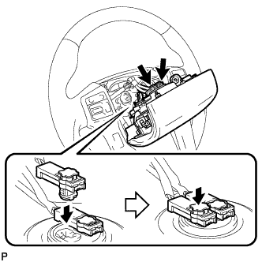

РУЛЕВОЕ КОЛЕСО > УСТАНОВКА |
| 1. УСТАНОВИТЕ РУЛЕВОЕ КОЛЕСО В СБОРЕ |
Совместите метки на рулевом колесе в сборе и главном валу рулевого управления в сборе.
Заверните установочную гайку рулевого колеса в сборе.
| 2. УСТАНОВИТЕ ГЛАВНЫЙ ВЫКЛЮЧАТЕЛЬ СИСТЕМЫ КРУИЗ-КОНТРОЛЯ (для моделей с системой круиз-контроля) |
 |
Установите переключатель и закрепите его 2 винтами.
Подсоедините разъем.
| 3. УСТАНОВИТЕ ДЕКОРАТИВНЫЙ ЭЛЕМЕНТ РУЛЕВОГО КОЛЕСА № 1 |
Введите в зацепление захват, чтобы закрепить декоративный элемент.
Заверните 2 винта.
| 4. УСТАНОВИТЕ ДЕКОРАТИВНЫЙ ЭЛЕМЕНТ РУЛЕВОГО КОЛЕСА № 2 |
Введите в зацепление захват, чтобы закрепить декоративный элемент.
Вверните 2 винта.
| 5. УСТАНОВИТЕ ПЕРЕКЛЮЧАТЕЛИ НА РУЛЕВОМ КОЛЕСЕ (для моделей с переключателями на рулевом колесе) |
Введите в зацепление захват, чтобы закрепить переключатель на рулевом колесе в сборе.
Заверните 4 винта.
Подсоедините разъем.
| 6. УСТАНОВИТЕ ПРАВЫЙ ПЕРЕКЛЮЧАТЕЛЬ НА РУЛЕВОМ КОЛЕСЕ (для моделей с переключателями на рулевом колесе) |
Введите в зацепление захват, чтобы закрепить правый переключатель на рулевом колесе.
Заверните 2 винта.
Подсоедините разъем.
| 7. УСТАНОВИТЕ НАКЛАДКУ РУЛЕВОГО КОЛЕСА |
|  |
Одной рукой придерживайте накладку рулевого колеса.
Подсоедините 2 разъема к накладке рулевого колеса.
Подсоедините разъем звукового сигнала.
Проверьте, что канавка по окружности винта "TORX" вошла в корпус с резьбой, и поместите накладку рулевого колеса на рулевое колесо.
Затяните 2 винта с помощью торцевого ключа "TORX" (T30).
| 8. УСТАНОВИТЕ НИЖНЮЮ КРЫШКУ РУЛЕВОГО КОЛЕСА № 2 |
 |
Введите в зацепление 2 захвата, чтобы установить крышку.
| *A | Для моделей без системы круиз-контроля |
| *B | Для моделей с системой круиз-контроля |
| 9. УСТАНОВИТЕ НИЖНЮЮ КРЫШКУ РУЛЕВОГО КОЛЕСА № 3 |
Введите в зацепление 2 захвата, чтобы установить крышку.
| 10. ПОДСОЕДИНИТЕ ПРОВОД К ОТРИЦАТЕЛЬНОМУ ВЫВОДУ АККУМУЛЯТОРНОЙ БАТАРЕИ |
| 11. ПРОВЕРЬТЕ КОНТРОЛЬНУЮ ЛАМПУ АВАРИЙНОГО СОСТОЯНИЯ SRS |